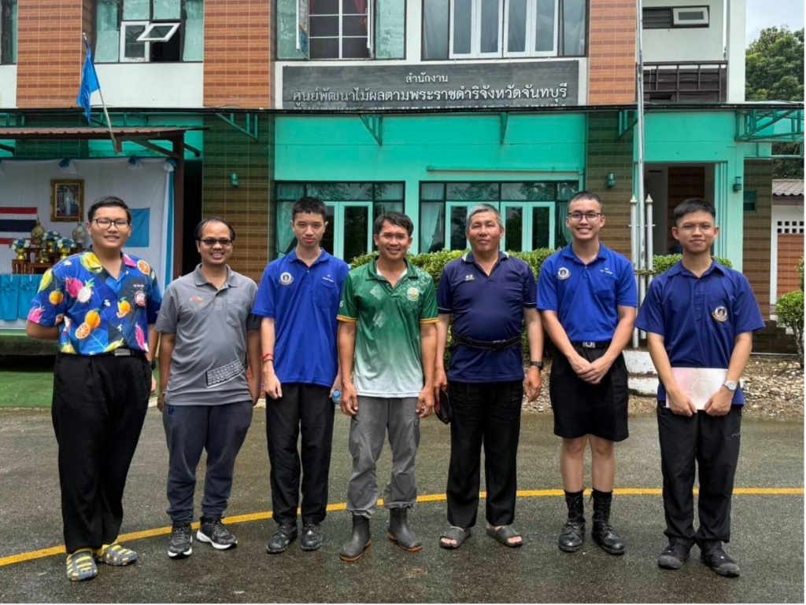
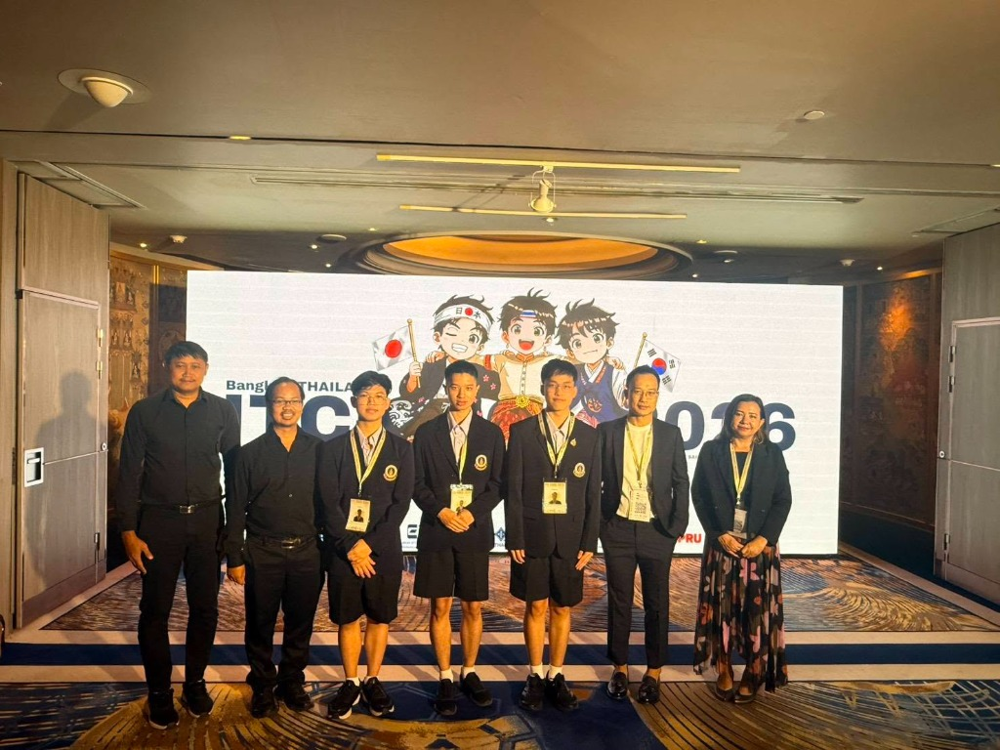

ทำไมการดูแล “ใบทุเรียน” ให้ทันเวลาจึงสำคัญต่อเกษตรกรไทย
ทุเรียน เป็นพืชเศรษฐกิจอันดับต้นๆ ของประเทศไทยที่สร้างรายได้เข้าประเทศกว่าแสนล้านบาทต่อปี โดยผลผลิตส่วนใหญ่พึ่งพาตลาดส่งออกที่มีมาตรฐานคัดเกรดคุณภาพอย่างเข้มงวด ความเสียหายเพียงเล็กน้อยในแปลงปลูกจึงส่งผลโดยตรงต่อรายได้ของเกษตรกรและมูลค่าการส่งออกของประเทศ
อย่างไรก็ตาม ทุเรียนเป็นพืชที่อ่อนไหวต่อสภาพแวดล้อมสูง ทั้งความชื้นสะสม ฝนตกชุก อากาศถ่ายเทไม่สะดวก หรือทรงพุ่มที่ทึบ ล้วนเอื้อให้โรคทางใบ (เช่น รากเน่าโคนเน่าจากเชื้อไฟทอปธอรา แอนแทรคโนส ราใบติด ใบจุดโฟมอปซิส และจุดสาหร่าย) แพร่กระจายอย่างรวดเร็ว หากสังเกตเห็นช้าหรือรักษาไม่ทันท่วงที โรคจะทำลายพื้นที่ใบสำหรับสังเคราะห์แสง ทำให้ต้นโทรม ผลผลิตลดลง และไม่ผ่านเกรดส่งออก จึงเกิดเป็นแอปพลิเคชัน YOEDO ขึ้น เพื่อเป็นเครื่องมือคัดกรองโรคบนใบอย่างรวดเร็วทันทีในสวน
คิดเป็น 4,404.9 ล้านดอลลาร์สหรัฐ แบ่งเป็นทุเรียนสด 134,852 ล้านบาท (859,183 ตัน) และทุเรียนแช่แข็ง 22,654 ล้านบาท
สร้างมูลค่าส่งออกทุเรียนสดกว่า 125,737 ล้านบาท ตอกย้ำบทบาทของทุเรียนในฐานะสินค้าเกษตรส่งออกหลักของไทย
ทุเรียนสดครองสัดส่วน 72.9% ของมูลค่าผลไม้สดส่งออกทั้งหมดของไทย โดยมีตลาดจีนเป็นปลายทางหลักถึง 97.4% (ปี 2567)
- สำนักงานนโยบายและยุทธศาสตร์การค้า (สนค.) กระทรวงพาณิชย์ — สถานการณ์การส่งออกทุเรียนไทย ปี 2567 และช่วงต้นปี 2568
- สำนักงานนโยบายและยุทธศาสตร์การค้า (สนค.) กระทรวงพาณิชย์ — โครงสร้างตลาดส่งออกทุเรียนสดไทย (สัดส่วนผลไม้สดและตลาดจีน)
- สำนักงานเศรษฐกิจการเกษตร (สศก.) กระทรวงเกษตรและสหกรณ์ — รายงานสถิติการค้าสินค้าเกษตรไทย ปี 2568 (ปริมาณ 979,045 ตัน / มูลค่า 125,737 ล้านบาท)
พูดคุยกับเกษตรกรและเจ้าหน้าที่ผู้เชี่ยวชาญ
ทีมผู้พัฒนาได้ลงพื้นที่พูดคุยแลกเปลี่ยนกับเกษตรกรและเจ้าหน้าที่ ณ ศูนย์พัฒนาไม้ผลตามพระราชดำริจังหวัดจันทบุรี เพื่อทำความเข้าใจโรคใบทุเรียนที่พบบ่อยในสวนจริง ปัญหาในการจำแนกอาการแต่ละระยะ รวมถึงข้อจำกัดเรื่องสัญญาณอินเทอร์เน็ตและการใช้งานมือถือของชาวสวน
เสียงสะท้อนจากหน้างานเหล่านี้ทำให้เราออกแบบแอปให้เมนูใช้งานง่าย ปุ่มใหญ่กดสะดวก ไม่ซับซ้อน และสามารถสแกนได้แม้ไม่มีอินเทอร์เน็ต



เก็บภาพใบทุเรียนจริงกว่า 4,668 ตัวอย่างจากในสวน
แทนที่จะใช้ภาพใบไม้บนพื้นหลังเรียบในห้องแล็บ ทีมวิจัยได้ลงเก็บภาพใบทุเรียนจากสภาพแวดล้อมจริงในสวน ที่มีทั้งแสงแดด เงา กิ่งไม้ และใบที่ซ้อนทับกัน แล้วนำมาจัดทำชุดข้อมูลจำนวน 4,668 ตัวอย่าง ครอบคลุม 7 ประเภท (5 โรคสำคัญ ใบปกติ และอาการอื่นๆ)
ตัวโมเดลใช้สถาปัตยกรรม YOLO-OBB ที่หมุนกรอบจับตามแนวเอียงของใบได้พอดี ทำให้ไม่ติดพื้นหลังอื่นมามากเกินไป และย่อขนาดให้ทำงานบนสมาร์ตโฟน Android ได้อย่างรวดเร็วโดยไม่ต้องต่ออินเทอร์เน็ต
นำเสนอผลงานบนเวที ITC-CSCC 2026 และเผยแพร่บน ResearchGate
แอปพลิเคชัน YOEDO เป็นส่วนหนึ่งของงานวิจัยด้านโมเดลตรวจจับโรคใบทุเรียน ซึ่งได้รับคัดเลือกให้นำเสนอในงานประชุมวิชาการระดับนานาชาติ The 41st International Technical Conference on Circuits/Systems, Computers, and Communications (ITC-CSCC 2026) ณ กรุงเทพมหานคร ส่วนบทความวิจัยเรื่อง “YOEDO: A Real-Time Mobile Application for Durian Leaf Disease Detection Using YOLO-OBB” จัดทำขึ้นสำหรับการนำเสนอผลงานในงาน Thailand-Japan Student ICT Fair (TJ-SIF 2026) และเผยแพร่บน ResearchGate เพื่อให้ผู้สนใจได้ศึกษาต่อยอด


ทีมผู้พัฒนา (Developers)
ผู้พัฒนาทั้งสามคนเป็นนักเรียนโรงเรียนมหิดลวิทยานุสรณ์
อาจารย์ที่ปรึกษา
คณาจารย์ผู้ให้คำปรึกษาและดูแลงานวิจัยจากทั้งสองสถาบัน
ดร.สิทธิโชค โสมอ่ำ
สาขาวิชาคณิตศาสตร์และวิทยาการคำนวณ
โรงเรียนมหิดลวิทยานุสรณ์
ดร.ธวัชชัย สุดใจ
สาขาวิชาฟิสิกส์
โรงเรียนมหิดลวิทยานุสรณ์
รองศาสตราจารย์ ดร.ภัทราพร ทองนิ่ม
ภาควิชาคณิตศาสตร์ คณะวิทยาศาสตร์
มหาวิทยาลัยบูรพา
มีคำแนะนำหรือพบปัญหาในการใช้งาน?
ไม่ว่าจะเป็นข้อเสนอแนะจากชาวสวนทุเรียน ปัญหาการใช้งานแอป หรือการติดต่อสอบถามด้านงานวิจัย สามารถส่งข้อความตรงถึงทีมผู้พัฒนาได้ทางอีเมล
ทดลองใช้งานแอป YOEDO ได้ฟรีบนมือถือ Android
พร้อมเมนูภาษาไทยและภาษาอังกฤษ ฐานข้อมูลโรค 7 ประเภท ใช้งานได้ทันทีกลางสวนโดยไม่ต้องต่ออินเทอร์เน็ต